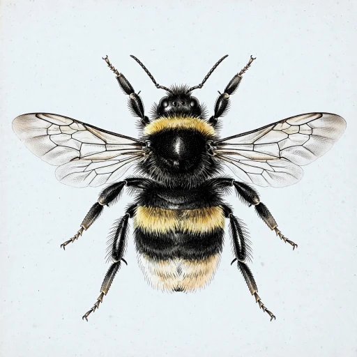
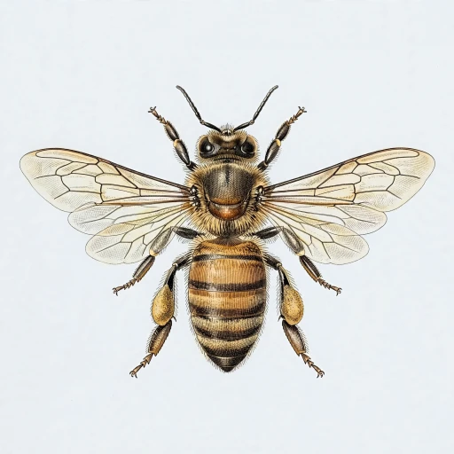
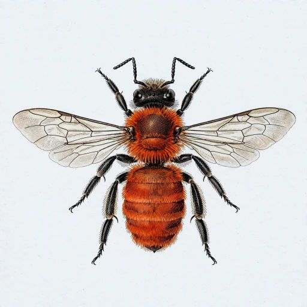
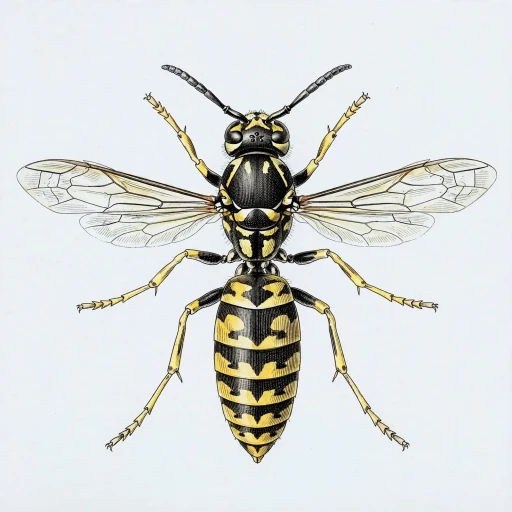
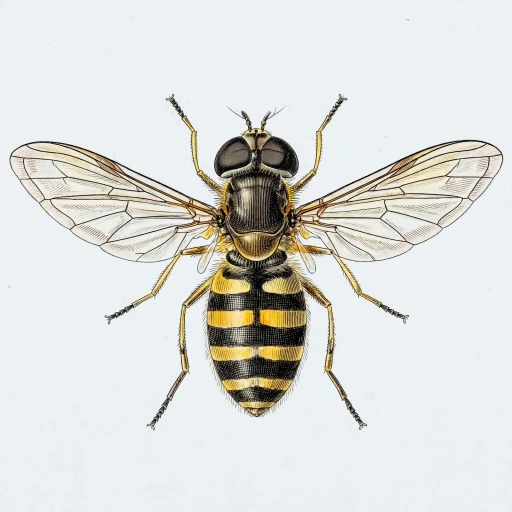
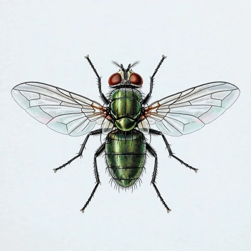
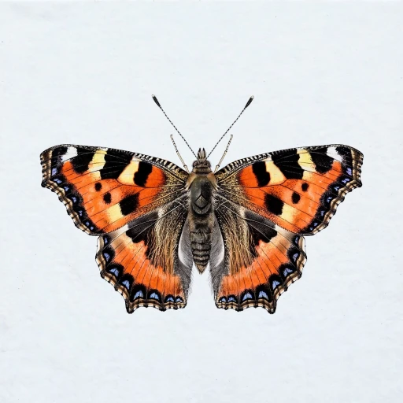
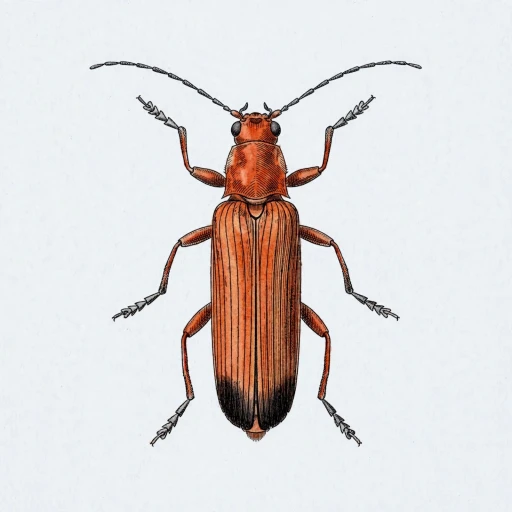
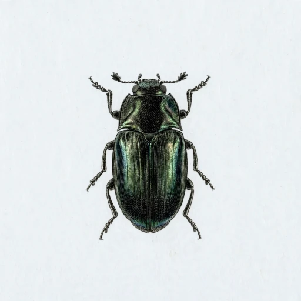
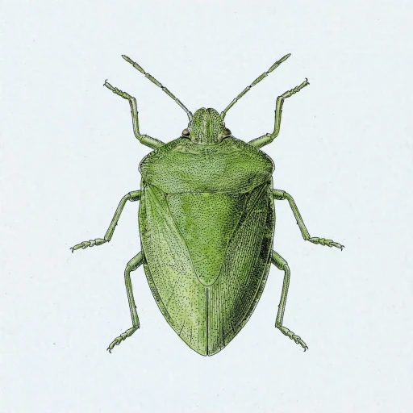

Count the pollinators on a flower patch.
Film a patch of flowers for a minute or two. PolliCount follows every insect that drops by, counts each landing and shows you who came to visit.
Start with your own video
- Up to 2 minutes
- Phone held still
- Or drop a file here
Try an example
Who you might meet
- Bumblebees

- Honeybees

- Solitary bees

- Wasps

- Hoverflies

- Other flies

- Butterflies and moths

- Beetles

- Small insects

- Other insects

How it works
- FilmPoint your phone at a patch of flowers and keep it still while insects come and go.
- Watch it countEvery insect is followed on screen, and each landing on a flower counts as a visit.
- Keep the recordSee who came to which flower, then download the counts for your survey.